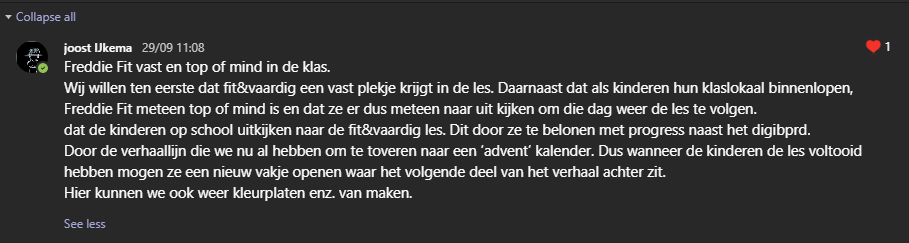
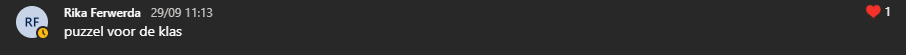
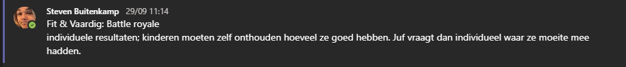
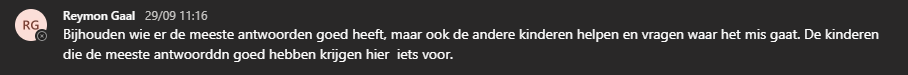
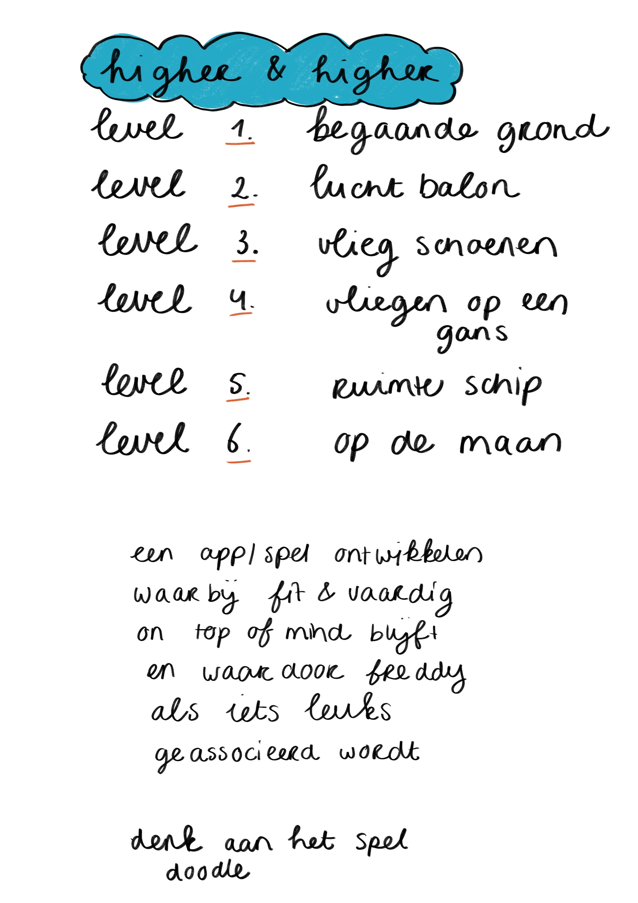
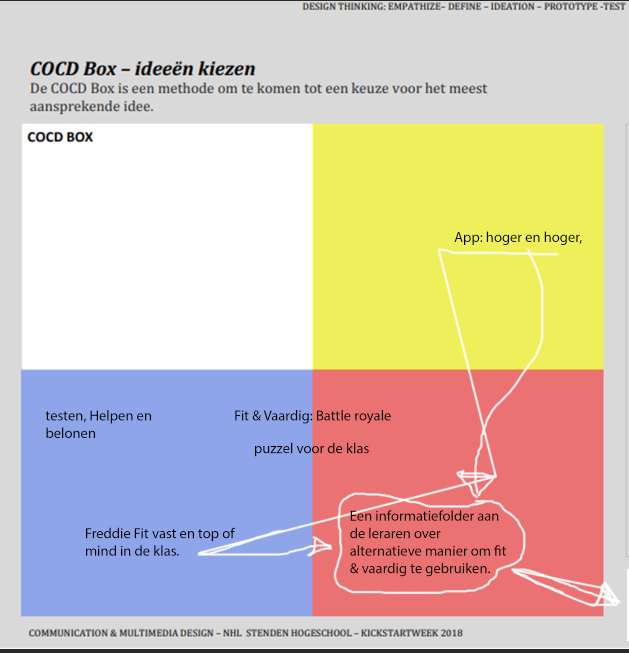

Concepting
3 EC's
Hoe kan ik op basis van het vooronderzoek tot een goed concept komen?
Hoe kan ik door middel van de negatieve brainstorm methode tot een beter concept komen?
Uitvoering
Bewijsvoering
Uitvoering
Hoe kan ik op basis van het vooronderzoek tot een goed concept komen?
Leer-subdoelen
Waar moet ik op letten tijdens het onderzoek?
Welke manier van onderzoek zorgt voor de meest relevante informatie?
Activiteit
In de eerste iteratie ga ik deskresearch naar de app van Fit&Vaardig doen om zo beter te begrijpen wat ik ga promoten. Daarna ga ik samen met het groepje bezig met de verschillende concepting methodes die school ons gegeven heeft en de door mij gevonden resultaten om zo tot een concept te komen.
Daarna, in de tweede iteratie, ga ik bezig met fieldresearch om meer te weten te komen over de doelgroep die wij vastgesteld hebben. Ook dan ga ik samen met het groepje bezig met de verschillende concepting methodes en mijn resultaten bezig om tot een concept te komen.
Uitkomst
Ik ben samen met Femke bezig geweest om de app te onderzoeken. We hebben een nieuw account gemaakt en daarna een paar opdrachten doorlopen. Hier hebben wij een aantal observeringen uit gehaald, deze zijn te vinden in de bewijsvoering.
In de tweede iteratie hebben wij geen fieldresearch meer gedaan en heb ik dus geen ervaring op kunnen doen met fieldresearch. Ik ben van plan om dit in de volgende periode wel te gaan doen. Wel heb ik naar de uitkomsten van mijn groepsgenoten die wel fieldresearch hebben uitgevoerd gekeken deze gebruikt tijdens de brainstorm van de 2e iteratie.
Reflectie
Toen wij bezig waren met het onderzoeken van de app dachten we dat we bezig waren met observatie. Na een consult te hebben gehad werd ons verteld dat wat wij deden onder deskresearch valt.
Ik heb al een achtergrond als applicatie-en-mediaontwikkelaar en weet dus al het een en ander van user experience. Dit heb ik dus ook gebruikt tijdens het vooronderzoek maar, ondanks dat heb ik nog wel iets nieuws kunnen leren over het onderzoeken van een app. Ik ben erachter gekomen dat je meerdere keren een app van A-Z moet doorlopen om echt alles te kunnen vinden. Het itereren van dit process zorgt ervoor dat je op een andere manier kan kijken naar wat je aan het onderzoeken bent.
Ik heb geleerd dat er niet iets specifieks is waar ik op moet letten. Alles kan van belang zijn als het gaat om onderzoek naar een app.
Dus, waar moet ik op letten tijdens het onderzoek?
Alles wat relevant is dat je kan vinden.
Na 2 iteraties van concepting te hebben gehad heb ik geleerd dat beide manieren van research verschillende informatie opleveren en dus beide nodig zijn om tot een goed concept te komen.
Dus, welke manier van onderzoek zorgt voor de meest relevante informatie?
Beide.
Hoe kan ik door middel van de negatieve brainstorm methode tot een beter concept komen?
Leer-subdoelen
Wat zijn de voordelen?
Hoe kan ik een bestaand concept verbeteren met deze methode?
Activiteit
Halverwege de eerste iteratie zijn wij negatief gaan brainstormen. Hier hebben wij een bestaand concept van ons door de mangel gehaald en we zijn erg kritisch geweest.
Ook in de tweede iteratie hebben we de negatieve brainstorm methode op ons concept los gelaten. Hier hebben we vooral individuele ideeën die wij wilden aansluiten op het concept dat we hadden bekritiseerd met de negatieve brainstorm methode.
Uitkomst
Tijdens de negatieve brainstorm van de eerste iteratie hebben we na een lange tijd besloten om het hele concept aan de kant te schuiven. Dit was erg moeilijk voor ons maar bleek achteraf wel de goede keuze geweest te zijn.
Toen we negatief aan het brainstormen waren over ons concept in de tweede iteratie, hebben we sommige ideeën die we eerst bij het concept toe wilden voegen weggehaald. Door pessimistisch te kijken naar de effecten van deze ideeën kwamen we erachter dat deze ideeën meer kwaad dan goed deden.
Reflectie
Het loslaten van het concept in de eerste iteratie was voor mij erg moeilijk maar, heeft wel mijn ogen doen openen naar het gevaar van tunnelvisie. Tunnelvisie was iets waar wij als groep (mij inbegrepen) erg last van hadden, ookal dacht ik "Dat overkomt mij toch niet!", en waar ik ook echt even mee heb moeten worstelen. De negatieve brainstorm methode heeft wel geholpen met deze worsteling.
Dus, wat is een groot voordeel van de negatieve brainstorm methode?
Het voorkomen/verhelpen van tunnelvisie en zorgt ervoor dat ik een bestaand concept los kan laten.
De tweede iteratie heeft mij echt de ogen geopend met hoe handig de negatieve brainstorm methode is. Er waren meerdere ideeën die wij hadden waarvan ikzelf dacht "Hey wat een goed idee, dat moeten we doen.". Door de negatieve brainstorm methode heb ik mij bedacht op al deze ideeën.
Dus, hoe kan de negatieve brainstorm methode mij helpen om een bestaand concept te verbeteren?
Door individuele ideeën door de mangel te halen en te bekijken of deze wel echt een positief effect zullen hebben op het concept.
Bewijsvoering
Conceptingfase
Na het consult met Werner hebben we een negatieve brainstorm sessie gehad, maar omdat deze compleet verbaal gedaan in Microsoft Teams was hebben we dus geen bewijs hiervoor.
Toen hebben we ons oude idee uit het raam gegooid en zijn we de tweede iteratie begonnen door opnieuw een concept te bedenken.
Iedereen heeft een idee bedacht en deze hebben we in de cocd box gegooid. Hieronder iedereens individuele idee:




Esmee:

Hieronder de COCD box van de conceptingfase van de tweede iteratie. Hier hebben wij verschillende ideeën gecombineerd om tot ons concept te komen.
Notulen consult met Werner Rinia
Opening
14.30 op donderdag 24 September 2020 begon ons consult met Werner Rinia.
Reden voor dit consult: Concepting fase van het project, wij zijn bezig met het verzinnen van een concept en hebben hier vragen over en willen feedback.
Aanwezigen
C4C: Reymon Gaal, Steven Buitenkamp, Esmee van den Brink, Joost IJkema (gespreksleider) en Rika Ferwerda (notulist)
Afwezigen
Femke Baas: corona verschijnselen, dus verplicht door GGD thuis te blijven.
Bart Houwaart: was geen verplichte schooldag en heeft veel reistijd (kreeg vrijstelling van de groep).
Op het moment gemaakte aantekeningen
- De status van Freddie en Femke staat in verhouding met de activiteit van de klas.
- Conceptzin kort en bondig, hoeft niet per se uitgebreid en uitgewerkt.
- Wij hebben nu 2 concepten in één zin, moeten we reduceren tot 1 focus.
- Probleemstelling Fit & Vaardig vergelijken met andere situaties “Top-of-mind CMD”.
- Alle focus op Freddie leggen, overal verstoppen en hoeft niet per se op school.
- Te moeilijk (denken) → Moet makkelijker.
- Leraren informeren is “hulp,” kan als aanvulling meegegeven worden aan de opdrachtgever. Is niet ons probleem om op te lossen, maar die van de opdrachtgever.
- Doelgroep moet specifieker.
Samenvatting
Het concept is te moeilijk, we moeten veel makkelijkere denken en het onszelf leuk maken. Daarnaast moeten we ons afvragen of dit wel het probleem is wat we moeten oplossen van de opdrachtgever. Nu hadden we een hele uitgebreide manier van concepten en dat kan wel wat korter. Het moet een soort slogan of motto worden. We hebben de doelgroep ontzettend breed gelaten, dit kunnen we makkelijker specificeren tot een kleinere doelgroep.